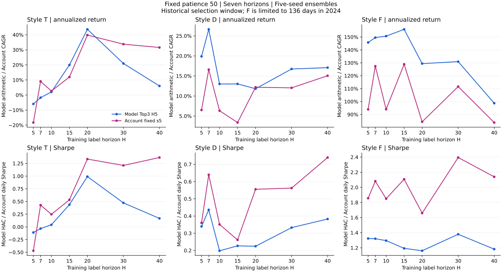
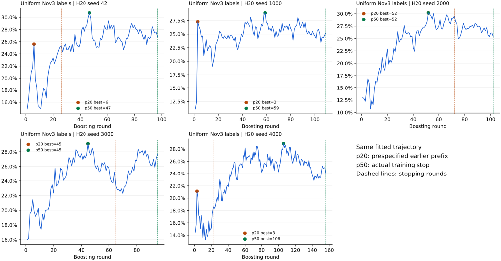
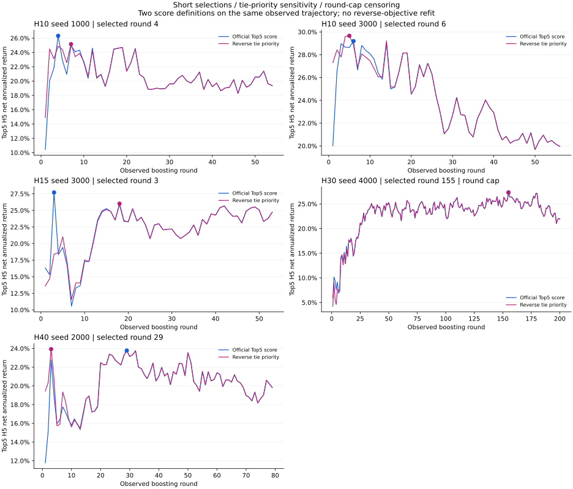

同输入seed3000重复拟合逐位稳定；106条标签变化稳定重现第5轮起的轨迹分叉。两组s5 CAGR差7.41个百分点，真阶梯差2.30个百分点（旧减新），绝对差距收窄。
D/H7、F/H15 的真阶梯回测均改善；2026 大回撤未发现账户计算错误，真阶梯不能普遍修复。
2026-11-05 保留范围更新：完整模型及账户明细仅保留 D/H7、F/H15、T/H20。以下七H数值表保留作原选型证据；不是七个仍可运行的模型档案。保留审计
T：模型收益不支持预设规律（最大值H=20）；模型夏普不支持预设规律（最大值H=20）；账户收益不支持预设规律（最大值H=20）；账户夏普不支持预设规律（最大值H=40）。
D：模型收益不支持预设规律（最大值H=7）；模型夏普不支持预设规律（最大值H=7）；账户收益不支持预设规律（最大值H=7）；账户夏普不支持预设规律（最大值H=40）。
F：模型收益不支持预设规律（最大值H=15）；模型夏普不支持预设规律（最大值H=30）；账户收益不支持预设规律（最大值H=15）；账户夏普不支持预设规律（最大值H=30）。
结论限制：上面的“支持/不支持”仅指预先规定的数值模式。本轮存在短轮选中、边界同分、反序敏感或轮数上限等训练诊断，逐项列于第4块；不能把对应表现差异全部归因于标签H。H20配对验证有效，不代表全部H的早停问题已经消除。
H=5/7/10/15/20/30/40，各5种子。固定M0、Alpha158＋range、原训练日期/权重/模型参数，统一Top5×H5净年化早停，patience=50、上限200轮。各H保留自己的有效标签样本，沿用原H40基础样本和排名顺序，没有对七H取共同样本，也没有按结果改耐心或删种子。
这是已用于早停与选型的历史窗口复验，并非独立样本外结果。历史v2是统一冻结推理来源上的参照，保留当前基线；H20是事先指定的报告代表/控制臂，不代表它是本轮最优。
| 信号 | Top3×H5净年化 | HAC波动 | 净夏普 | 全局H5 RankIC | 非扣费年化 | 日换手 | 天数 |
|---|---|---|---|---|---|---|---|
| 历史v2 · 同源参照 | 30.22% | 58.20% | 0.5192 | 0.0981 | 34.13% | 17.86% | 1448 |
| H5 · patience50 | 26.32% | 65.21% | 0.4035 | 0.0911 | 30.54% | 19.30% | 1448 |
| H7 · patience50 | 32.26% | 66.86% | 0.4825 | 0.0937 | 36.28% | 18.36% | 1448 |
| H10 · patience50 | 23.64% | 70.25% | 0.3365 | 0.0942 | 27.48% | 17.55% | 1448 |
| H15 · patience50 | 27.88% | 66.64% | 0.4184 | 0.0989 | 31.79% | 17.85% | 1448 |
| H20 · patience50 | 29.49% | 59.72% | 0.4938 | 0.0986 | 33.42% | 17.95% | 1448 |
| H30 · patience50 | 28.34% | 55.76% | 0.5082 | 0.0970 | 32.25% | 17.87% | 1448 |
| H40 · patience50 | 22.44% | 48.37% | 0.4638 | 0.0926 | 26.34% | 17.83% | 1448 |
各组独立生成五种子预测，经正式入口按日截面z-score等权合成后评估一次；不同H不混合。H5退出日期严格在评估窗内，模型样本末端2026-07-23，共1448日。
| H | seed42 | seed1000 | seed2000 | seed3000 | seed4000 | 合成信号 | 合成低于全部分量 |
|---|---|---|---|---|---|---|---|
| 5 | 26.89% | 25.80% | 25.44% | 24.82% | 23.21% | 26.32% | False |
| 7 | 30.49% | 31.26% | 27.45% | 23.83% | 33.32% | 32.26% | False |
| 10 | 22.76% | 19.68% | 32.68% | 26.55% | 24.63% | 23.64% | False |
| 15 | 28.18% | 25.18% | 30.70% | 26.49% | 27.56% | 27.88% | False |
| 20 | 29.38% | 27.65% | 31.36% | 27.63% | 28.28% | 29.49% | False |
| 30 | 29.72% | 33.01% | 25.93% | 20.21% | 23.92% | 28.34% | False |
| 40 | 27.87% | 25.06% | 22.07% | 26.27% | 23.66% | 22.44% | False |
合成信号评估不是五个收益指标的平均；逐种子结果仅作诊断，不据此删种子或改权重。
100万、risk_degree=0.90、top5/drop1/hold1/f100、原费用，至2026-07-31共1454日。模型净年化为算术口径，账户为CAGR；两者的收益和夏普定义不同，不作数值等同。
| 信号 | CAGR | 夏普 | 最大回撤 | Alpha | Beta | 基准累计涨幅 | 天数 |
|---|---|---|---|---|---|---|---|
| 历史v2 · 同源参照 | 34.81% | 1.1769 | -32.80% | 24.65% | 0.8832 | 58.62% | 1454 |
| H5 · patience50 | 6.49% | 0.3578 | -44.10% | 1.48% | 0.9109 | 58.62% | 1454 |
| H7 · patience50 | 22.36% | 0.7707 | -44.27% | 15.05% | 1.0061 | 58.62% | 1454 |
| H10 · patience50 | 11.65% | 0.4984 | -45.87% | 6.20% | 0.9656 | 58.62% | 1454 |
| H15 · patience50 | 13.24% | 0.5496 | -38.16% | 6.92% | 0.9916 | 58.62% | 1454 |
| H20 · patience50 | 23.13% | 0.8562 | -34.29% | 15.51% | 0.8986 | 58.62% | 1454 |
| H30 · patience50 | 23.45% | 0.9079 | -40.79% | 16.12% | 0.8161 | 58.62% | 1454 |
| H40 · patience50 | 23.67% | 1.0343 | -29.49% | 17.24% | 0.6268 | 58.62% | 1454 |
完整账户净值与指标：历史v2 · 同源参照（明细已按保留范围清理） · H5 · patience50（明细已按保留范围清理） · H7 · patience50 · H10 · patience50（明细已按保留范围清理） · H15 · patience50 · H20 · patience50 · H30 · patience50（明细已按保留范围清理） · H40 · patience50（明细已按保留范围清理） · H20 · 配对patience20（明细已按保留范围清理）
2020、2026为部分年度；各年是同一整窗选轮后的切片，不能替代逐年样本外检验。
| 信号 | 模型净年化 | 模型夏普 | 模型天数 | 账户CAGR | 账户夏普 | 账户回撤 | 账户天数 |
|---|---|---|---|---|---|---|---|
| 历史v2 · 同源参照 | 2.96% | 0.0605 | 103 | 25.37% | 1.0230 | -10.74% | 103 |
| H5 · patience50 | -0.84% | -0.0173 | 103 | 14.16% | 0.6254 | -11.07% | 103 |
| H7 · patience50 | 4.88% | 0.0861 | 103 | 20.09% | 0.7456 | -15.67% | 103 |
| H10 · patience50 | 1.56% | 0.0276 | 103 | -10.38% | -0.2386 | -15.36% | 103 |
| H15 · patience50 | -10.81% | -0.2169 | 103 | -26.84% | -1.0035 | -22.79% | 103 |
| H20 · patience50 | 9.07% | 0.1959 | 103 | -8.27% | -0.1834 | -14.86% | 103 |
| H30 · patience50 | 24.97% | 0.4878 | 103 | -5.06% | -0.0534 | -15.59% | 103 |
| H40 · patience50 | 35.87% | 0.8084 | 103 | -6.03% | -0.1386 | -12.71% | 103 |
| 信号 | 模型净年化 | 模型夏普 | 模型天数 | 账户CAGR | 账户夏普 | 账户回撤 | 账户天数 |
|---|---|---|---|---|---|---|---|
| 历史v2 · 同源参照 | 49.16% | 0.9844 | 243 | 51.16% | 1.6266 | -17.92% | 243 |
| H5 · patience50 | 62.57% | 1.0505 | 243 | 69.38% | 1.8389 | -16.39% | 243 |
| H7 · patience50 | 70.73% | 1.2360 | 243 | 91.35% | 2.1160 | -12.98% | 243 |
| H10 · patience50 | 47.39% | 0.7605 | 243 | 44.61% | 1.2756 | -16.71% | 243 |
| H15 · patience50 | 44.93% | 0.8501 | 243 | 47.02% | 1.3853 | -19.06% | 243 |
| H20 · patience50 | 40.29% | 0.7882 | 243 | 32.66% | 1.1165 | -17.01% | 243 |
| H30 · patience50 | 62.58% | 1.2893 | 243 | 88.72% | 2.3406 | -17.55% | 243 |
| H40 · patience50 | 45.29% | 0.9784 | 243 | 56.91% | 2.0659 | -13.01% | 243 |
| 信号 | 模型净年化 | 模型夏普 | 模型天数 | 账户CAGR | 账户夏普 | 账户回撤 | 账户天数 |
|---|---|---|---|---|---|---|---|
| 历史v2 · 同源参照 | 24.83% | 0.4235 | 242 | 9.54% | 0.4471 | -32.80% | 242 |
| H5 · patience50 | 35.08% | 0.5453 | 242 | 12.81% | 0.5238 | -34.01% | 242 |
| H7 · patience50 | 33.38% | 0.5140 | 242 | 29.10% | 0.9004 | -34.42% | 242 |
| H10 · patience50 | 8.34% | 0.1180 | 242 | -12.23% | -0.2041 | -45.87% | 242 |
| H15 · patience50 | 28.96% | 0.4451 | 242 | 3.82% | 0.2777 | -34.11% | 242 |
| H20 · patience50 | 9.16% | 0.1605 | 242 | 9.20% | 0.4416 | -33.02% | 242 |
| H30 · patience50 | 15.89% | 0.2639 | 242 | -6.58% | -0.0507 | -33.91% | 242 |
| H40 · patience50 | 27.18% | 0.5213 | 242 | -2.33% | 0.0552 | -26.25% | 242 |
| 信号 | 模型净年化 | 模型夏普 | 模型天数 | 账户CAGR | 账户夏普 | 账户回撤 | 账户天数 |
|---|---|---|---|---|---|---|---|
| 历史v2 · 同源参照 | 17.48% | 0.4358 | 242 | 5.37% | 0.3509 | -18.30% | 242 |
| H5 · patience50 | 14.31% | 0.3846 | 242 | 13.19% | 0.6863 | -14.46% | 242 |
| H7 · patience50 | 6.79% | 0.1645 | 242 | 9.55% | 0.4992 | -21.60% | 242 |
| H10 · patience50 | 11.45% | 0.2863 | 242 | 21.82% | 0.9363 | -15.81% | 242 |
| H15 · patience50 | 13.49% | 0.3072 | 242 | 18.93% | 0.8037 | -18.68% | 242 |
| H20 · patience50 | 23.53% | 0.5727 | 242 | 14.07% | 0.7224 | -12.47% | 242 |
| H30 · patience50 | 19.43% | 0.5470 | 242 | 5.13% | 0.3676 | -11.58% | 242 |
| H40 · patience50 | 18.05% | 0.6618 | 242 | 17.16% | 1.1547 | -10.95% | 242 |
| 信号 | 模型净年化 | 模型夏普 | 模型天数 | 账户CAGR | 账户夏普 | 账户回撤 | 账户天数 |
|---|---|---|---|---|---|---|---|
| 历史v2 · 同源参照 | 34.61% | 0.3669 | 242 | 22.00% | 0.7155 | -31.87% | 242 |
| H5 · patience50 | 32.73% | 0.3210 | 242 | -5.38% | 0.0486 | -36.43% | 242 |
| H7 · patience50 | 46.64% | 0.4455 | 242 | 1.60% | 0.2498 | -37.30% | 242 |
| H10 · patience50 | 46.68% | 0.4343 | 242 | 3.73% | 0.2933 | -33.20% | 242 |
| H15 · patience50 | 42.55% | 0.3744 | 242 | 1.12% | 0.2356 | -35.61% | 242 |
| H20 · patience50 | 40.96% | 0.4157 | 242 | 8.64% | 0.4072 | -34.27% | 242 |
| H30 · patience50 | 43.21% | 0.4959 | 242 | 18.19% | 0.6904 | -35.89% | 242 |
| H40 · patience50 | 17.35% | 0.2300 | 242 | 31.31% | 1.1306 | -24.21% | 242 |
| 信号 | 模型净年化 | 模型夏普 | 模型天数 | 账户CAGR | 账户夏普 | 账户回撤 | 账户天数 |
|---|---|---|---|---|---|---|---|
| 历史v2 · 同源参照 | 47.67% | 1.3248 | 243 | 123.75% | 3.3409 | -8.43% | 243 |
| H5 · patience50 | 47.28% | 1.0674 | 243 | 6.73% | 0.3797 | -18.89% | 243 |
| H7 · patience50 | 62.46% | 1.2991 | 243 | 43.10% | 1.4055 | -22.03% | 243 |
| H10 · patience50 | 51.62% | 0.8865 | 243 | 62.88% | 1.8660 | -17.40% | 243 |
| H15 · patience50 | 56.40% | 1.3447 | 243 | 69.82% | 2.0897 | -17.55% | 243 |
| H20 · patience50 | 47.67% | 1.2343 | 243 | 72.12% | 2.4333 | -10.23% | 243 |
| H30 · patience50 | 36.59% | 1.2047 | 243 | 72.04% | 2.5281 | -10.66% | 243 |
| H40 · patience50 | 24.13% | 0.8575 | 243 | 37.28% | 1.7493 | -6.58% | 243 |
| 信号 | 模型净年化 | 模型夏普 | 模型天数 | 账户CAGR | 账户夏普 | 账户回撤 | 账户天数 |
|---|---|---|---|---|---|---|---|
| 历史v2 · 同源参照 | 9.83% | 0.2112 | 133 | 25.95% | 0.9296 | -23.19% | 139 |
| H5 · patience50 | -62.98% | -1.0091 | 133 | -55.26% | -1.9406 | -44.10% | 139 |
| H7 · patience50 | -53.88% | -0.8896 | 133 | -34.07% | -0.9296 | -44.27% | 139 |
| H10 · patience50 | -45.66% | -0.7511 | 133 | -35.87% | -0.9003 | -39.71% | 139 |
| H15 · patience50 | -27.85% | -0.5870 | 133 | -36.48% | -1.2946 | -38.16% | 139 |
| H20 · patience50 | 19.32% | 0.3912 | 133 | 30.97% | 1.0102 | -22.22% | 139 |
| H30 · patience50 | -34.92% | -0.7224 | 133 | -7.35% | -0.1162 | -26.68% | 139 |
| H40 · patience50 | -24.20% | -0.6103 | 133 | 24.34% | 1.0340 | -11.67% | 139 |
T检查随H增大是否每一步均不下降；D检查每一步是否均不升高；另列H40/H5端点是否为最大值。F检查全部并列最大值是否均落在H5/7/10。容差1e−12。相关系数仅作描述，不是显著性检验。

| 信号 | 模型净年化 | 模型夏普 | 模型波动 | 模型天数 | 账户CAGR | 账户夏普 | 账户回撤 | 账户天数 |
|---|---|---|---|---|---|---|---|---|
| 历史v2 · 同源参照 | 43.02% | 1.0166 | 42.31% | 302 | 56.68% | 1.7922 | -23.19% | 308 |
| H5 · patience50 | -5.94% | -0.1109 | 53.58% | 302 | -18.29% | -0.4705 | -44.10% | 308 |
| H7 · patience50 | -1.75% | -0.0340 | 51.30% | 302 | 9.06% | 0.4288 | -44.27% | 308 |
| H10 · patience50 | 2.04% | 0.0407 | 50.05% | 302 | 2.66% | 0.2468 | -39.71% | 308 |
| H15 · patience50 | 19.95% | 0.4376 | 45.58% | 302 | 11.93% | 0.5323 | -38.16% | 308 |
| H20 · patience50 | 43.64% | 0.9905 | 44.06% | 302 | 39.80% | 1.3355 | -22.22% | 308 |
| H30 · patience50 | 20.93% | 0.4720 | 44.35% | 302 | 33.77% | 1.2100 | -26.68% | 308 |
| H40 · patience50 | 6.02% | 0.1670 | 36.04% | 302 | 31.57% | 1.3662 | -11.67% | 308 |
| 指标 | 预设规律 | 全部最大值H | 预设端点为最大值 | Spearman(H,指标) |
|---|---|---|---|---|
| 模型净年化 | 不支持 | 20 | False | 0.7500 |
| 模型夏普 | 不支持 | 20 | False | 0.7500 |
| 账户CAGR | 不支持 | 20 | False | 0.8214 |
| 账户夏普 | 不支持 | 40 | True | 0.9286 |
收益：模型与账户假设判读一致，最大值H一致；夏普：模型与账户假设判读一致，最大值H不一致。
| 信号 | 模型净年化 | 模型夏普 | 模型波动 | 模型天数 | 账户CAGR | 账户夏普 | 账户回撤 | 账户天数 |
|---|---|---|---|---|---|---|---|---|
| 历史v2 · 同源参照 | 13.96% | 0.2706 | 51.58% | 1010 | 19.47% | 0.7827 | -32.80% | 1010 |
| H5 · patience50 | 19.88% | 0.3396 | 58.53% | 1010 | 6.50% | 0.3603 | -38.05% | 1010 |
| H7 · patience50 | 26.63% | 0.4362 | 61.06% | 1010 | 16.59% | 0.6394 | -43.88% | 1010 |
| H10 · patience50 | 13.00% | 0.1983 | 65.53% | 1010 | 6.33% | 0.3512 | -45.87% | 1010 |
| H15 · patience50 | 13.01% | 0.2267 | 57.39% | 1010 | 3.37% | 0.2615 | -41.20% | 1010 |
| H20 · patience50 | 11.81% | 0.2246 | 52.59% | 1010 | 12.19% | 0.5552 | -34.29% | 1010 |
| H30 · patience50 | 16.74% | 0.3327 | 50.31% | 1010 | 12.03% | 0.5623 | -33.91% | 1010 |
| H40 · patience50 | 17.07% | 0.3827 | 44.61% | 1010 | 15.06% | 0.7398 | -29.49% | 1010 |
| 指标 | 预设规律 | 全部最大值H | 预设端点为最大值 | Spearman(H,指标) |
|---|---|---|---|---|
| 模型净年化 | 不支持 | 7 | False | -0.3571 |
| 模型夏普 | 不支持 | 7 | False | -0.0714 |
| 账户CAGR | 不支持 | 7 | False | 0.2143 |
| 账户夏普 | 不支持 | 40 | False | 0.4286 |
收益：模型与账户假设判读一致，最大值H一致；夏普：模型与账户假设判读一致，最大值H不一致。
| 信号 | 模型净年化 | 模型夏普 | 模型波动 | 模型天数 | 账户CAGR | 账户夏普 | 账户回撤 | 账户天数 |
|---|---|---|---|---|---|---|---|---|
| 历史v2 · 同源参照 | 122.54% | 1.1446 | 107.06% | 136 | 135.18% | 2.3219 | -17.08% | 136 |
| H5 · patience50 | 145.74% | 1.3233 | 110.14% | 136 | 93.93% | 1.8558 | -19.44% | 136 |
| H7 · patience50 | 149.54% | 1.3203 | 113.27% | 136 | 127.41% | 2.0818 | -18.95% | 136 |
| H10 · patience50 | 150.69% | 1.2952 | 116.34% | 136 | 94.02% | 1.8497 | -17.68% | 136 |
| H15 · patience50 | 155.95% | 1.1925 | 130.77% | 136 | 128.90% | 2.1073 | -17.33% | 136 |
| H20 · patience50 | 129.38% | 1.1609 | 111.45% | 136 | 84.30% | 1.6589 | -17.93% | 136 |
| H30 · patience50 | 130.92% | 1.3792 | 94.93% | 136 | 111.60% | 2.3948 | -17.62% | 136 |
| H40 · patience50 | 98.72% | 1.1822 | 83.50% | 136 | 83.71% | 2.1394 | -14.07% | 136 |
| 指标 | 预设规律 | 全部最大值H | 预设端点为最大值 | Spearman(H,指标) |
|---|---|---|---|---|
| 模型净年化 | 不支持 | 15 | 不适用 | -0.6071 |
| 模型夏普 | 不支持 | 30 | 不适用 | -0.3929 |
| 账户CAGR | 不支持 | 15 | 不适用 | -0.3571 |
| 账户夏普 | 不支持 | 30 | 不适用 | 0.5000 |
收益：模型与账户假设判读一致，最大值H一致；夏普：模型与账户假设判读一致，最大值H一致。
F仅覆盖2024年的7个月、136个交易日；没有跨年风格证据。风格来自既有月度分类，本轮不据此构造或回测实时切换策略。
为统一各H的原始标签来源，本轮全部在冻结2026-11-03快照重算标签，特征块仍取冻结2026-11-02版本。H20有106/5,448,963个排名标签变化（约0.00195%）；有序训练索引、特征、日期、权重和验证面板相同。因此H20重新拟合5种子，并从同轨迹截取预先定义的patience20对照。此输入差异不等于已查明历史v2收益差距根因。
| 桥接对照 | 模型净年化 | 模型夏普 | 账户CAGR | 账户夏普 | 账户回撤 |
|---|---|---|---|---|---|
| H20 · 配对patience20 | 19.47% | 0.2813 | 4.71% | 0.3039 | -39.93% |
| H20 · patience50 | 29.49% | 0.4938 | 23.13% | 0.8562 | -34.29% |
| 预先冻结的桥接条件 | 结果 |
|---|---|
| same_ordered_features_and_weights | True |
| same_formal_eval_and_account_inputs | True |
| all_p50_naturally_stopped | True |
| all_p50_best_round_above6 | True |
| no_selected_boundary_ties | True |
| reverse_priority_same_stops | True |
| model_return_and_sharpe_not_lower | True |
| account_CAGR_and_sharpe_not_lower | True |
| no_ensemble_collapse | True |
| p50批次 | 模型净年化 | 模型夏普 | 账户CAGR | 账户夏普 |
|---|---|---|---|---|
| 上一轮原标签缓存 | 31.31% | 0.5252 | 30.54% | 1.0642 |
| 本轮统一Nov3标签 | 29.49% | 0.4938 | 23.13% | 0.8562 |
| 种子 | 旧/新p50选轮 | 首次目标差异轮 | 整段目标完全相同 | 全推理预测完全相同 | 最大预测绝对差 |
|---|---|---|---|---|---|
| 42 | 47/47 | 无 | True | False | 0.0267 |
| 1000 | 59/59 | 无 | True | False | 0.0145 |
| 2000 | 52/52 | 无 | True | False | 0.0359 |
| 3000 | 49/45 | 5 | False | False | 0.409 |
| 4000 | 106/106 | 无 | True | False | 0.0359 |
上表为实际观察，不作唯一原因归因：本轮有106个标签变化，训练数值非确定性也尚未被独立消除。历史v2原始训练矩阵/环境证据缺失的问题仍然未决。延长耐心的结论来自本批次内同轨迹p20/p50配对。
目标曲线相同并不意味着完整预测逐位相同。全推理面板的实际差异已另行量化；不能仅凭选轮相同、目标相同或少量输入差异就宣布复现问题已解决。

| H | 种子 | p20最佳/停止（轨迹回放） | p50最佳/停止 | p50早停目标 | 选中轮同分天数 | 反序最佳/停止（已观测轨迹回放） | 反序选择/停止相同 | 拟合分钟 |
|---|---|---|---|---|---|---|---|---|
| 5 | 42 | 9/29 | 9/59 | 23.47% | 104 | 9/59 | True | 4.3 |
| 5 | 1000 | 25/45 | 25/75 | 30.09% | 0 | 25/75 | True | 5.6 |
| 5 | 2000 | 28/48 | 28/78 | 28.75% | 0 | 28/78 | True | 5.5 |
| 5 | 3000 | 27/47 | 27/77 | 25.55% | 0 | 27/77 | True | 5.5 |
| 5 | 4000 | 28/48 | 28/78 | 23.71% | 0 | 28/78 | True | 6.4 |
| 7 | 42 | 7/27 | 7/57 | 30.49% | 118 | 7/57 | True | 4.4 |
| 7 | 1000 | 6/26 | 69/119 | 29.46% | 0 | 69/119 | True | 8.3 |
| 7 | 2000 | 22/42 | 22/72 | 31.40% | 0 | 22/72 | True | 5.7 |
| 7 | 3000 | 12/32 | 12/62 | 28.83% | 24 | 12/62 | True | 4.6 |
| 7 | 4000 | 17/37 | 17/67 | 32.20% | 0 | 17/67 | True | 4.9 |
| 10 | 42 | 25/45 | 25/75 | 24.27% | 0 | 25/75 | True | 5.1 |
| 10 | 1000 | 4/24 | 4/54 | 26.32% | 660 | 7/截至54轮未观测停止 | False | 4.2 |
| 10 | 2000 | 24/44 | 24/74 | 32.38% | 0 | 24/74 | True | 5.3 |
| 10 | 3000 | 6/26 | 6/56 | 29.20% | 255 | 5/55 | False | 4.4 |
| 10 | 4000 | 14/34 | 14/64 | 27.40% | 3 | 14/64 | True | 5.1 |
| 15 | 42 | 60/80 | 60/110 | 30.09% | 0 | 60/110 | True | 7.1 |
| 15 | 1000 | 17/37 | 39/89 | 25.95% | 0 | 39/89 | True | 6.5 |
| 15 | 2000 | 53/73 | 53/103 | 31.59% | 0 | 53/103 | True | 7.6 |
| 15 | 3000 | 3/23 | 3/53 | 27.70% | 910 | 18/截至53轮未观测停止 | False | 4.3 |
| 15 | 4000 | 5/25 | 98/148 | 30.75% | 0 | 98/148 | True | 9.7 |
| 20 | 42 | 6/26 | 47/97 | 30.72% | 0 | 47/97 | True | 6.2 |
| 20 | 1000 | 3/23 | 59/109 | 28.92% | 0 | 59/109 | True | 7.6 |
| 20 | 2000 | 52/72 | 52/102 | 30.17% | 0 | 52/102 | True | 6.7 |
| 20 | 3000 | 45/65 | 45/95 | 29.10% | 0 | 45/95 | True | 6.4 |
| 20 | 4000 | 3/23 | 106/156 | 28.87% | 0 | 106/156 | True | 10.6 |
| 30 | 42 | 56/76 | 56/106 | 32.85% | 0 | 56/106 | True | 7.2 |
| 30 | 1000 | 106/126 | 106/156 | 32.36% | 0 | 106/156 | True | 10.7 |
| 30 | 2000 | 44/64 | 44/94 | 30.33% | 0 | 44/94 | True | 7.1 |
| 30 | 3000 | 36/56 | 36/86 | 25.61% | 0 | 36/86 | True | 6.6 |
| 30 | 4000 | 66/86 | 155/200轮上限 | 27.32% | 0 | 155/截至200轮未观测停止 | True | 13.6 |
| 40 | 42 | 54/74 | 54/104 | 28.23% | 0 | 54/104 | True | 6.5 |
| 40 | 1000 | 13/33 | 13/63 | 26.04% | 14 | 13/63 | True | 4.4 |
| 40 | 2000 | 29/49 | 29/79 | 23.77% | 0 | 3/53 | False | 5.6 |
| 40 | 3000 | 7/27 | 7/57 | 28.48% | 406 | 7/57 | True | 4.0 |
| 40 | 4000 | 69/89 | 69/119 | 28.84% | 0 | 69/119 | True | 7.7 |
反序诊断只在实际已训练的轨迹上改变同分优先顺序后回放；未另行训练反序目标。若截至实际停止轮仍未满足反序耐心条件，只标记为未观测停止，不能外推未来选轮或停止位置。

H20桥接验收在其余H训练前完成。其余H保持统一patience=50；若出现200轮上限、极短选轮或同分敏感性，照实列出，不临时改变该H规则。
{
"censored": [
[
30,
4000
]
],
"ensemble_below_all_components": [],
"selected_at_or_below6": [
[
10,
1000
],
[
10,
3000
],
[
15,
3000
]
],
"selected_boundary_ties": [
[
5,
42
],
[
7,
42
],
[
7,
3000
],
[
10,
1000
],
[
10,
3000
],
[
10,
4000
],
[
15,
3000
],
[
40,
1000
],
[
40,
3000
]
],
"reverse_priority_changed_selection_or_stop": [
[
10,
1000
],
[
10,
3000
],
[
15,
3000
],
[
40,
2000
]
]
}| H | 实际训练样本数 | 种子数 |
|---|---|---|
| 5 | 5,469,025 | 5 |
| 7 | 5,461,850 | 5 |
| 10 | 5,455,022 | 5 |
| 15 | 5,449,337 | 5 |
| 20 | 5,448,963 | 5 |
| 30 | 5,452,670 | 5 |
| 40 | 5,530,740 | 5 |
成本：本轮35次实际拟合（成功35，失败0），前期68次，累计103次；H20配对p20来自同轨迹前缀，新增拟合0次。七个科学臂归一个模型实验，固定s5作为派生验证。没有基线晋升或生产变更。
过程问题：年度标签准备曾因重复构造静态NameDFilter而中断；替代适配器保留原股票生存区间，已完成年份的索引、H40原始标签和上市掩码逐项完全相等后继续。训练、推理和回测固定从仓库导入Qlib；每年DK_I特征均校验与早停确认阶段相同，实际模型和完整目标曲线先落盘再检查。